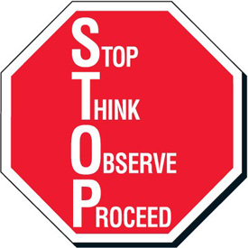
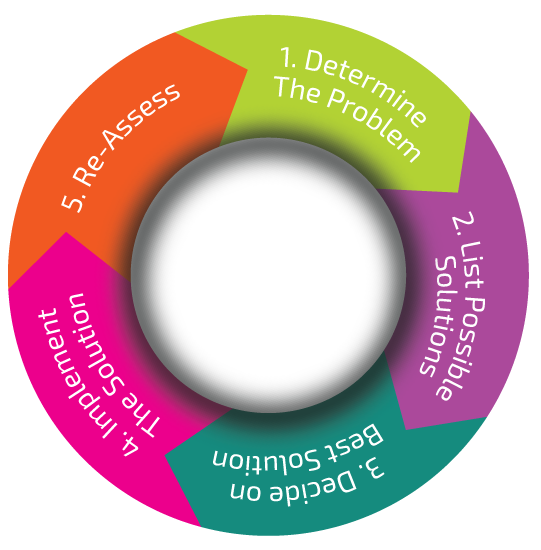

Module 2: Goal-Setting and Organization
2.1 Decisions
In this section you are going to explore...
- Jill’s Story
- Decision Making Patterns
- The 5 Step Decision Making Model
Decisions...Decisions...Decisions
Have you ever gone on a journey that took you far away from home? Do you remember the time you spent getting ready to go? You probably took some time making sure you were ready for the journey. Perhaps you needed a passport or some new clothes. You had to decide where you wanted to go. You may have spent time finding out more about the place you were going to be sure it was somewhere you really wanted to go. Likely you would have taken out a map and talked over how far you would need to travel and how long it would take. You may even have planned how far you would travel each day.
In some ways, going to high school is like taking a journey. In Module 1: Understanding Self as Learner, you had an opportunity to assess yourself and how you learn best. You probably made some interesting discoveries about yourself that will be of help in handling your journey through high school.
Now you are ready to take a look at where you want to go. The activities in this module will show you a simple and easy way to make decisions, set goals, and get you started down the road to successful learning.
Jill’s Story
It seems life is full of decisions. Every day we make hundreds, even thousands of decisions, such as what to wear, what to eat, what song to listen to, or when to call a friend. Some decisions are easy, and some are so small and so routine we may not even realize we are making them. But - once in a while, we may be faced with a big change that requires a huge decision. We aren’t always prepared for the change because it may come as a surprise or be a first-time experience. We may be left wondering, “What do I do now?â€
Take, for example, the story about a girl named Jill, whose life was going along wonderfully until one day . . .
But let’s get Jill to tell you her own story:
Well, things couldn’t be going much better. Payday tomorrow and the boss said that next month I get a $1.00/hour raise. Now I can buy that new cell phone I’ve been saving for. My roommate hasn’t been quite as crabby lately and she actually helped with the dishes last night. Wow -- the weekend is here -- and I’m ready for some fun. Life is spectacular!
What’s this? A note under the door of our suite? What’s going on? They’re what? They’re tearing this apartment block down? In three months? You’re kidding me? What do they expect us to do? We have to be out by the end of next month! I can’t believe it. Wait till Diana (my roommate) finds out!
“Diana -- are you home? Guess what . . . Oh, she’s not home, but here’s a note from her.â€
Jill, I won’t be home tonight. I’m spending the weekend at my grandma’s house. She is feeling lonely and asked me to come to visit her. I read the note under the door. Tough break. I thought I should let you know that I will be moving back in with Grandma next month. Sorry! Talk to you on Sunday night.
Well - that’s just great, now I’m really on my own. This was Diana’s place first, she owns all this furniture. How can I manage on my little salary? What can I do? Maybe I’ll call Jake. He is my old standby friend. He always seems to know what to do in a pinch.
A couple of hours later . . .
Well, sure enough, that Jake knows how to make lemonade out of lemons. He said he was sorry that my life has been turned upside down. Then he said maybe there is another way to look at my problem. He said that if I try to be positive and do some planning, I might find I am even happier than before. I’m not really convinced. But, what have I got to lose? He said he would help me once I make my plan.
So -- I’m through feeling miserable, I’ve decided to consider some of my options. I think I have three:
- I could look for another roommate to share a place with
- I could move back in with my sister and her three kids or
- I could try to find a small furnished place of my own at a rent I could afford
One of the things Jake said struck me. He said I might find living by myself is even better than sharing. It’s true, my roommate Diana and I haven’t really hit it off. Besides, living alone has some advantages. If I lived alone, I could eat what I wanted and when I wanted. I could play my favorite music and on weekends I could stay up as long as I liked. Jake even said he would help me look for a furnished place and help me get settled. I think I know which choice is best for me.
The newspaper has so many ads for apartments, but most are unfurnished and out of my price range. But, I won’t let myself get discouraged again, I am getting a raise. Oh -- and Jake suggested I look for a furnished basement suite. Here are a couple within my price range . . . who knows? One of them might suit me. I’ll call to see if I can look them over tomorrow night after work.
The next evening, after looking at a couple of suites . . .
Well, “No Thanks†to the first suite. I can’t stand big dogs and the landlady has a Doberman. But, the other one seems better. The landlady is nice. The suite is small, but it is clean and I can pay the rent and still afford to eat. I can put off buying that cellphone for a while. I think I’ll phone the landlady back and take the second suite.
And, a week later . . .
YES! My place is just fine. I like having company upstairs, and my own space downstairs. Jake is coming over tonight to help me put up posters and unpack. Besides, it’s the weekend again and I am free to spend it however I want. Life is spectacular!
Life is constantly changing. Some changes are within our control and some are not. We cannot always predict when a change will occur or what it will look like. But, we can control what we do when a change happens. We can choose to control our changes or allow our changes to control us. Although we may not realize it, ignoring change by making no decision is also a decision.
Our reactions depend on our attitudes toward change. Do we see change as a challenge or a threat? Exciting or scary? Opportunity or disaster? Keeping a positive attitude can make all the difference.

Change is like a stop sign on the road. It is there to tell us to look around before moving on. It tells us that we are at a place where we have to make a choice. We can choose to go ahead, or we can turn in a new direction. But the sign tells us to first stop and look before we make a decision.Change is never the end. It is just a shift in direction. As Jill found out, when life hands you a lemon, you can make lemonade!
Decision Making Patterns
There are many ways of making a decision. We all use some of them. Have you seen any of these patterns in the past? Have they worked for you? It is important to be aware of your patterns and, if necessary, take steps to change them.
- Wish Pattern - You make a choice hoping it will get you what you want. But, as with all wishes, these may not come true.
Example: You choose to marry Jennifer, hoping to change her bad habits so you will live happily ever after.
- Escape Pattern - You choose an alternative in order to avoid the terrible thing you imagine might happen.
Example: You do not go to a party because you are afraid everyone will laugh at the way you
dance.
- Safe Pattern - You choose the alternative that is most likely to bring success.
Example: You take an art class knowing you are a good artist. You stay away from taking
another subject in which you do not know how well you will do.
- Impulsive Pattern - You give a decision little thought or consideration, taking the first alternative, not looking before you leap.
Example: You move out of your parents’ home into an apartment without first looking at the
advantages and disadvantages of this move.
- Fatalistic Pattern - You let the environment decide, leaving it up to fate.
Example: You do not take the time to learn to swim before you go on a long canoe trip.
- Submissive Pattern - You let someone else decide or give in to group pressure.
Example: You have a cigarette because your friend wants you to.
- Delaying Pattern - You put off making a decision. You procrastinate.
Example: You leave paying your bills until the last minute.
- Agonizing Pattern - You get so overwhelmed by possible choices that you don’t know what to do.
Example: You need to decide which high school program is best for you, but there are so many schools and so many different subjects that you can’t make up your mind.
- Planning Pattern - You use a “sensible†plan of action so that the end result is satisfying.
Example: You take a job with a company where you can get ahead and be promoted.
- Intuitive Pattern - You make a choice on the basis of vague feelings or hunches.
Example: You choose an apartment because you like it even though it is too expensive.
The Five-Step Decision-Making Model

Many of us fall into faulty decision-making patterns. Examine the following flowchart to discover one of the most effective decision-making models - The 5 Step Decision Making Model.Step 1: Determine the problem and assess the situation.
When something happens to change your life, stop, step back a bit, and look at your situation.
Step 2: Consider the options available and list possible solutions.
Find out about options open to you. Think about your needs, wants, and abilities.
Step 3: Decide on the best solution.
Go over each possibility and think about it. Then, choose the best one for you.
Step 4: Plan a course of action and implement the solution.
Make a plan to carry out your decision. Follow through on it and make it happen.
Step 5: Reassess
After a few days or weeks, look at the decision again and make adjustments if needed.